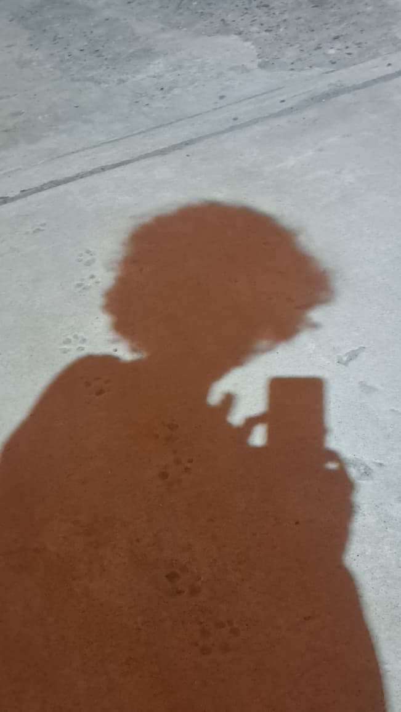

Mi Biografía
Siempre me ha interesado la tecnología y cómo funcionan las plataformas digitales por detrás. Iniciar la Tecnicatura en Desarrollo Web en el CURZAS representa una gran oportunidad para formarme profesionalmente en este rubro.
Intereses y Objetivos
Mi objetivo principal es dominar las bases del diseño web accesible y las buenas prácticas de desarrollo frontend para construir aplicaciones útiles para la comunidad regional.

Tecnologías de interés
- HTML5 y CSS3 Semántico
- JavaScript Moderno
- Control de versiones con Git y GitHub